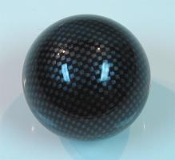

Material and Decoration
In the final product of a custom controller, there are utility and aesthetic goals to keep in mind.
From the more important perspective of utility, you want a controller that empowers you to play at your best. The joystick and buttons are laid out intuitively to the way your mind and body function. There are as few bolts and rails and other objects hindering your hands and forearms as possible. It does not cut, irritate, or splinter your skin.
This utility perspective lends itself to many of the aesthetic qualities. The controller is smooth and shows little of its pieces that hold the structure together. And objects accommodating the human body tend to have an art to them.
From the choice of wood, glass, and other materials, to the artwork or texture, to the contouring of the box, to the paint or stain and/or finish, to the colors of the devices, there are many ways to decorate your custom joystick.
Be sure to follow safety guidelines when working any form of material.
Contents
Wood
Acrylic Glass and Polycarbonate
Metal
Other Materials
Imagery
Finishing
Devices
Illumination
Wood
There is a huge variety of trees, and woods from those trees. Pretty much any wood commonly used in furniture or tools works well for a controller.
To work wood well, it helps a lot to understand some things about the structure and characteristics and varieties of it.
Structure
Wood is mainly harvested from the trunk of trees. Tree trunks are long cylinders with fibers and growth rings running the length.
The fibers of trees are small cylindrical cells that are hollow with pores and run the same direction as the trunk. They absorb and run water and other nutrients throughout the tree. Fibers expand and contract as they gain and lose moisture; this can greatly affect the structure of wood. Some species of trees have larger and/or more-spaced fibers which makes for a coarser texture than species with smaller and/or more-compact fibers. Some species also have some prominent fibers that run from the center to the outside of the tree which show as crossing lines in some areas of the grain.
Growth rings are what give wood its patterns. Angiosperm trees, which have broad leaves and include deciduous trees, are more affected by the seasons and tend to have more defined growth rings; earlywood grows during the spring with a greater volume, lower density, and lighter color; latewood grows during the summer with a smaller volume, higher density, and darker color. Gymnosperms, which have needle-shaped leaves and include conifers, are not so affected by the seasons and tend to have less of a variation in the grain.
Hardwoods and softwoods are a simple distinction. Hardwoods come from trees with broad leaves, and softwoods come from trees with needles. While trees with broad leaves tend to have harder wood, it is not always the case. It is better to assess individual species (or fabrications) of wood when looking for the right attributes.
Grain is a general term describing the combined fibers in wood. The grain can be described as more coarse when the fibers are more noticable. The direction of the grain describes the direction the fibers point; working with the grain means working in the direction of the fibers. The growth rings in the tree move in the same direction as the grain and are an easy way to recognize it. The grain basically runs the length of the tree.
Preparation
It takes a lot of work to prepare wood for use in structures. It is not as simple as just cutting tree trunks.
For quality cuts of wood (which is often called stock), first the tree trunk is cut into planks (which can be done in various ways to make different grain patterns). Then the planks are stacked with numerous spacers and weight to keep the wood even and allow it to dry and remove most the moisture the tree held before harvest. The drying process takes a year when left to dry on its own; it takes a day or two when a kiln helps.
When the planks have dried to the desired moisture, they are then cut again to the desired dimensions. They are also planed (shaved) flat and even on each side (boards usually are not very even after fibers have dried and compacted).
When you buy wood from a hardwood seller, this process has been completed for the most part. Some of the pieces end out better than others. It is a good idea to rest cuts of wood from a seller on flat surfaces to see how well the work was done (also check for knots, splits, and other defects). Some cuts of wood have a nicer color or grain pattern than others as well. Reputable online sellers of wood usually do a good job on preparing the wood and providing a good color and pattern. Premium wood with an excellent pattern and color usually takes effort to find, and costs a lot more.
Engineered Wood
Engineered wood is made from bits of wood bonded and shaped by glue and pressure. Plywood is made from layers of thinly cut wood. Particleboard is made from chips of wood. Fiberboard is made from fibers of wood. Fiberboard is usually the best choice for use in a controller because it holds the most uniform flat shape and has a fine and smooth texture.
Sizing
Standards for measuring cuts of wood can be a bit strange. What is called a 2x4 is usually 1-1/2"x3-1/2". In measurements describing woods in North America, a measurement of 1 can actually be 3/4", of 2 to 6 can be 1/2" less, and of 8 to 14 can be 3/4" less. Be sure to measure cuts of wood directly before purchasing.
Varieties of Wood
There is an enormous variety of trees that brings an enormous variety of woods. Because many woods grow and function better than others, and many woods are at a more reasonable price, the best choices can be narrowed down to about a dozen types.
Many exotic woods are out there. They usually come from heavier old-growth trees from economically poorer regions of the world, with samples that have been growing individually for about a century. In modern times, they are more expensive, and many are endangered because of harvesting. I will not go into great detail on them.
Your availability of various woods at a good supply and price will depend a lot on your geographical location and the trees that grow near you. Most hardware stores have at least a small variety of woods; they often have a section with smaller, exact cuts of woods like pine, poplar, and oak, and larger cuts of MDF. For more choices of wood, you will have to find a specialty hardwood or woodworking merchant.
Below is a list of woods commonly used in small projects. Each has a brief description followed by some attributes and ratings.
Pine: Various types of pine are the most popular of the softwoods in making furniture and tools. Cedar and fir are also popular. The main problem with softwood is that it is usually too soft and fragile for a controller. It is very easily dented. I recommend looking elsewhere.
Durability: Very Low, Strength: Medium, Density: Low, Workability: High, Coarseness: Low to Medium, Pattern: Mostly Straight with Average to Numerous Thin to Thick Lines, Color: White to Yellow to Light Red, Dark Yellow to Red to Brown Lines, Price: Low
Poplar: Poplar is one of the best types of wood for those new to woodworking. It is like a hybrid between a softwood and a hardwood (though it is considered hardwood). It is light and has average durability. It is great for painting, but tends not to look so great with clear finish. For a light, painted controller, there is no better choice.
Durability: Low, Strength: Medium, Density: Low, Workability: High, Coarseness: Low, Pattern: Mostly Straight with Few Thin to Medium Lines, Color: White to Yellow to Green (often in the same piece), Yellow to Light Purple to Black Lines, Price: Low
Oak: Oak comes in varieties such as red, white, Japanese, and European. It is a strong wood with a significant place in examples of classic furniture. The problem with oak is it tends to have a very non-uniform, wavy, coarse surface. If you want a mirror surface, oak is a bad choice, about requiring a filler to make uniform, and does not have a texture very suitable for hands. I advise against using oak in a controller. Ash, chestnut, and elm have similar negative attributes.
Durability: High, Strength: High, Density: High, Workability: Medium, Coarseness: High, Pattern: Mostly Straight with Average Medium to Thick Lines, Color: White to Light Red, Light Brown to Dark Brown Lines, Price: Medium
Cherry: Cherry is a fine wood with medium attributes. You may think it has a strong red, but that often takes decades to age into the wood. Along with maple and walnut, I give it a strong recommendation when using a clear finish.
Durability: Medium, Strength: Medium, Density: Medium, Workability: Medium, Coarseness: Low, Pattern: Straight with Average Medium Lines, Color: Light Red to Brown, Light Brown to Dark Brown Lines, Price: Medium
Maple: Maple is a strong, very durable wood having more different uses than pretty much any natural form of common wood. Canadians put it on their flag for more than just the syrup. I highly recommend it to those with at least moderate woodworking experience.
Durability: High, Strength: High, Density: High, Workability: Low, Coarseness: Low, Pattern: Straight to Wavy to Bird's Eye with Numerous Thin to Medium Lines, Color: White to Light Yellow, Yellow to Brown Lines, Price: Medium
Walnut: Walnut is regarded in many places as the premium common wood. It is dark, heavy, and durable without too coarse of a texture. Like maple, I highly recommend it to those with a little more woodworking experience.
Durability: High, Strength: High, Density: High, Workability: Medium, Coarseness: Medium, Pattern: Straight to Wavy with Medium to Thick Lines, Color: Brown to Dark Brown, Dark Brown to Black Lines, Price: Medium
Mahogany: Mahogany is another classic wood for furniture making. It is very similar to cherry, but tends to cost more and have a coarser texture.
Durability: Medium, Strength: Medium, Density: Medium, Workability: Medium, Coarseness: Medium, Pattern: Straight with Average Thin Lines, Color: Light Red-Brown to Dark Brown, Dark Brown to Black Lines, Price: Medium to High
Basswood: Basswood is a light, very uniform wood. Because of its strong uniformity and small fibers, it is mostly used in carving. If you want to attempt a box with detailed carving, consider basswood.
Durability: Low, Strength: Medium, Density: Low, Workability: High, Coarseness: Low, Pattern: Almost None, Color: White to Light Yellow, Price: Low
Padauk: Padauk is a borderline exotic wood with a striking orange-red color. It is very oily; like many exotic woods, the joints should be rubbed with mineral spirits (many prefer acetone for this) just before gluing to temporarily reduce oil that can weaken the glue.
Durability: High, Strength: High, Density: High, Workability: Medium, Coarseness: Medium, Pattern: Mostly Straight with Numerous Medium Lines, Color: Orange to Red, Dark Red to Black Lines, Price: High
Purpleheart: Purpleheart is another borderline exotic wood. It has an alluring purple color. Yellowheart is similar but yellow, and bloodwood, tulipwood, and bubinga are similar but light red.
Durability: High, Strength: High, Density: Very High, Workability: Low, Coarseness: Low to Medium, Pattern: Mostly Straight with Numerous Thin to Medium Lines, Color: Purple to Brown, Brown to Black Lines, Price: High
Marblewood: Marblewood is an exotic wood with alternating light and dark bands. Ebony (often solid black), wenge, and zebrawood are very similar.
Durability: High, Strength: High, Density: Very High, Workability: Low, Coarseness: Low to Medium, Pattern: Straight to Wavy with Average Thick Lines, Color: White to Light Brown, Dark Brown to Black Lines, Price: High
MDF: MDF (medium-density fiberboard) is what I consider the best synthetic wood for use in a controller. It is very uniform and does not warp making it a good choice for the control panel. It is generally unattractive and should be painted. It does not really splinter or chip out, but can have substantial blow out. Many arcade cabinets (including the control panel) are made of MDF. It is also good for making jigs and templates, and as cheap and flat scrap wood. The biggest negative is it pulverizes when worked producing substantial dust; wear a mask when working it.
Durability: High, Strength: High, Density: High, Workability: Medium, Coarseness: Very Low, Pattern: None (like heavy cardboard), Color: Light Brown, Price: Very Low
Hardboard: Hardboard (HDF) is a more dense and heavy form of particle board. It is usually used as a durable, strong form of thin wood, usually about 1/8" (3mm) thick; it tends not to have the thickness and flatness of MDF. Like MDF, it is very inexpensive and pretty easy to work. Masonite is a smooth form of hardboard. Hardboard only really has use as the bottom panel in a controller.
Durability: High, Strength: High, Density: Very High, Workability: Medium, Coarseness: Very Low, Pattern: None, Color: Light Brown to Dark Brown, Price: Very Low
Plywood: Plywood is made of glued thin layers (usually about 3mm) of natural wood, usually birch or maple. It often does not hold as uniformly flat as MDF, so I do not recommend it.
Durability: High, Strength: High, Density: Medium, Workability: Medium, Coarseness: Medium, Pattern: Varies, Color: Varies, Price: Low
Moisture and Warping
The cylindrical fibers in wood expand and contract as moisture is gained and loss. Whether or not the wood is still alive, it absorbs moisture similar to (but a much lower degree) a sponge. The absorption and evaporation of moisture can cause expansion and contraction and warping.
Expansion and contraction of the trunk of a tree tends mostly to increase and decrease the girth of the tree, but not the length; the cylindrical fibers get thicker, but not so much longer. Moisture can also absorb into one section of a piece of wood more than another causing it to bend. Most boards are cut the length of the tree, and this is good for a box; it is best to have the boards with the grain running the lengths of the box so it does not expand and contract and bend the panel so much.
As for the control panel in the controller, this is one reason synthetic panels tend to be better. Natural wood panels expand, contract, and warp very easily. Note in many doors and cabinets that grooves are made in surrounding boards that hold the panels without fasteners; in tables the top is often held with corner braces or other adjusting fasteners; woodworkers ensure that pieces will expand and contract in a way that does not strain the structure. Having the fasteners on the panel exploit some kind of give can help make the controller more durable; this can be done with things like corner braces, bored under flat screws, and bolts anchored in loose holes by bolts and washers. It is good though that controllers tend not to be large, and moisture does not have too big of an effect.
Moisture and warping is one of the great advantages of synthetic wood and other materials; they tend not to warp as much. It is usually not good to use natural wood in the control panel. Synthetic wood, plastic, and metal are better for the control panel.
But even synthetic wood (and some other materials) along with natural wood is subject to warping from working. Especially with routing and drilling in thicker pieces of wood, if a larger area of material is bored out of one side than the other side, the material tends to cave in slightly on the opening. A prime example of this is in the grooves to make space for the joystick and buttons in a control panel; when the space is made in 3/4" (19mm) MDF or natural wood, the panel warps slightly (about 1mm or 2mm over its length). It helps to bore as symmetrically as possible into materials. For this reason, 1/2" (12mm) thick wood is actually better to use for the control panel than 3/4".
Matching Wood and Grain
Asthetically, it tends to be better to have each side of the box match. For wood, it is often difficult to get pieces from separate cuts that match really well. Because of this it is usually best to get all the sides of the box from the same cut of wood.
It is also nice to have the grain run fluidly around the surface of the box. The first thing that helps this is miter joints. The second thing is to have the cuts run in the same order around the box. With a thinner board, make sure to cut in the order of each side; this will leave one mismatched corner. For a completely continuous grain, a thicker, shorter board is needed; cut the thick piece down the middle and use the insides of this cut as the faces for the box; the two resulting nearly identical faces will be able to form a continuous grain around the box.
Splintering, Chip Out, and Blow Out
Because of the fibrous structure of wood, it can react with undesired results when being cut. Splintering happens when bits around the area being cut flake out, chip out when larger bunches of fibers come out, and blow out (also called tear out) when a large chunk breaks out. These usually happen at the back end of cuts.
Try to understand the structure of wood when cutting it. Do not do things that compromise the sturdiness of a piece. Support the back (and sometimes front) of pieces of wood with some scrap wood to prevent blow out. Transition routing when possible.
Cutting
Cutting wood is pretty straight forward. There are many saws available; they are described in the tools section. Use precise measurements and jigs to make things exact. Try to support the back end of cuts to prevent chip out; miter fences can help in this.
Drilling
As in drilling any material, I suggest using a drill press, or some other jig to make drilling exact. Try to have the piece clamped down when drilling it. Reference the tools section for more information.
For drilling wood, bits made of any metal will work. The best type of bits for small holes in wood is brad-point, but other drill bits will work also. The best type of bits for large holes in wood is forstner, followed by spade bits, then by hole saws; make pilot holes first when using larger bits. For deeper holes in wood, be sure to pull the bit from the hole to remove wood dust periodically, especially with bits that are not brad-point or forstner; if you see smoke, it is a sure sign that there is a lot of friction and the dust needs to be cleaned.
A lot of blowout can come from drilling through wood on the back end. As the bit reaches the back end of the wood, the support gets very thin, and the bit will often break through pulling many large chunks of fiber. This is countered in a few ways. The least sure way is going slowly out the back end. Especially for large holes, drilling about half way on both sides can help; drill about half way on one side, flip the piece over, and go the rest of the way on the other side. The most simple and sure way to deal with this is backing the piece with some scrap wood; this way the back end will not be thin and weak.
A drill can also be used for routing. Forstner bits are best for routing. Where possible, try either to have the bit routing symmetrically (like when increasing the size of a hole) or with the centering point boring through material. When drilling is not symmetric or the centering point is not held, the bit tends to stray away from what it is cutting and makes slanted and uneven routing; it is also harder to keep the piece in place when doing this.
Routing and Contouring
Routing is usually associated with working wood. The router, router table, and router bits are covered in the tools section.
Contouring is one of the main ways to enhance the look of a controller, and can be done in many ways. Just make sure not to compromise the strength of the controller in the process. With designs like the double-box, there is plenty of bulk that can be shaped.
Image: Some contouring router bits
Using a router and a special router bit like a roundover or a chamfer is an easy way to give the box a nice look. Chamfered and rounded surfaces actually have a really good feel to them. Many tools like the router, circular saw, band saw, chisel, sander, and sandpaper can give shape to the box.
Smoothing
Besides using sharp quality blades in cutting and scraping (scrapers can be great for smoothing), sanding is the primary way to smooth wood. As a general rule, it is best to sand with the grain. With the grain describes the direction of the fibers, which is easily noticed by following the lines in the wood; with the grain moves along these lines. When sanding is done against the grain (not along the grain), unattractive scratches often develop in the wood.
Using a sanding block on flat surfaces can be very important. It is nice in general to have the uniformity of a block, but also in wood the earlywood and latewood can have different strengths. Without a sanding block, sanding can make a wood surface more wavy as it grinds the weakers area more than the stronger areas.
Sanding can help in slight honing of dimensions, but do not use it in more substantial shaping that needs to be precise.
More details of sanding are described in the finishing section.
Gluing
White glue and yellow glue (which is sometimes brown) have resin similar to natural wood and tend to work best in gluing wood. Hot glue, epoxy, and other strong glues also work, but not as well.
Try to cover thinly and completely the areas of the pieces being joined; small rollers, spreaders, and brushes can help in evenly spreading the glue; use clamps, weights, and/or an assembly jig to bring the pieces together nicely. Try to keep a lot of excess glue from getting on other surfaces; excess glue absorbs into wood and can show poorly when finishing. Use a damp cloth while the glue is fresh to remove excess (this can sometimes just spread the glue though); use a scraper of some kind (like a butterknife) to remove excess (letting it dry a little first can make it easier); sand or chisel the excess away after drying (this can be very frustrating and leave some misshapen surfaces); masking tape can prevent excess glue from making contact in the first place. Fillers can also leave spots on surfaces.
Combining Woods and Inlay
Multiple boards of wood layered together using glue and clamps (and sometimes dowels) is a common practice for making larger blocks of wood from smaller ones. Consider doing this if you need an unusually large block of wood.
This technique can also be used to make attractive designs. Layering together different kinds of quality wood can make for alluring stripes in a controller box.
And if you want to go the extra mile, look into inlay. Inlay involves precisely putting a different kind of wood or other material into a bulk piece of wood. Inlay kits for routers are great; they consist of a bushing (or two), a rim that fits on the bushing, and a router bit equal to the difference in thickness between the rim and the bushing (or two bushings).
Acrylic Glass and Polycarbonate
Real glass is too fragile and dangerous to use for the panel or box in a controller. Acrylic glass and polycarbonate are the two most popular forms of plastics emulating glass. They make a nice surface for the top of a control panel with craftability, synthetic flatness, thinness, a nice feel, and the ability to hold images. They are most commonly used for the control panel, and often for the bottom panel, but can also be worked to form a controller box, usually with the help of acrylic cement.
Acrylic Glass
Acrylic glass is a term usually describing poly(methyl methacrylate), which is a transparent thermoplastic. PMMA has many other standard and brand names including plexiglas, acrylite, lucite, and simply acrylic. Plexiglas (or just plexi) is especially used to describe acrylic glass. Personally I prefer the term acrylic, though I often use the term loosely, and often use the term to describe simultaneously polycarbonate.
Polycarbonate
Polycarbonate is another transparent thermoplastic. Polycarbonate has many brand names including calibre, lexan, makrolife, makrolon, and panlite. Lexan is especially used to describe polycarbonate. Acrylic is a term often used to describe both acrylic and polycarbonate.
Acrylic Vs Polycarbonate
Compared with standard glass, both acrylic and polycarbonate are about half the density, more flexible and durable, more expensive, less transparent (though not very noticably), and more prone to scratching. Compared to each other:
- Polycarbonate is much more flexible than acrylic; polycarbonate can bend much more than acrylic without cracking; this makes polycarbonate much easier to drill than acrylic.
- Acrylic is easier to cut and smooth than polycarbonate.
- Acrylic resists scratching much better than polycarbonate.
- Acrylic has much less friction than polycarbonate; polycarbonate has more of a rubbery feel.
- Acrylic stays cleaner than polycarbonate; polycarbonate attracts grease and dust.
- Acrylic is a little more transparent than polycarbonate (this is not that noticable).
- Acrylic has a slight white tint, while polycarbarbonate has a slight black tint (this is not that noticable).
- Acrylic weathers better than polycarbonate.
- Acrylic is much cheaper than polycarbaonte; polycarbonate costs about three times more.
- Acrylic is available in many tints and colors and even mirror surfaces (a specialty dealer is usually where these are found), while polycarbonate is not.
From the list you can see that the one advantage of polycarbonate is flexibility. Drilling is much, much easier to do in polycarbonate. Drilling is prone to cracking acrylic (read the drilling subsection below for tips on drilling acrylic). Reasons for using polycarbonate over acrylic include being a novice to drilling, adding a thin bottom panel (use at least about 1/4"/6mm for an acrylic bottom panel), and building a more durable box; otherwise I suggest using acrylic glass.
Standard plexiglas and lexan can be found in most hardware stores in usually a couple thicknesses of about 1/10" and 1/4" (2mm and 6mm); some common exact sizes are .220" and .093" (this size seems to be more like .075" for some reason). You can often special order other varieties with different thicknesses and coloring from them, or find a specialty seller.
Cutting
There are a few methods for cutting acrylic glass. In cutting it yourself, make sure to leave the film on it until it has been cut and other work has been completed on it; you can add some tape along where it is being cut to keep it from cracking or scratching. Make sure it rests on a flat surface when cutting it.
Most stores that sell acrylic glass also sell inexpensive cutters for it. To use one of these, a metal straight edge and maybe some clamps to keep it in place will be need; make sure the edge covers what will be the panel so mistakes will not be such a big deal. Run the glass cutter along and slightly into the metal edge. Gently push the cutter into the glass; a heavy push will cause an uneven line and make mistakes happen much more easily. Run the cutter in the same line enough times to put a strong seam into the glass (about 20 or 30 light cuts work well). Lay the cut, seam side up, on a defined corner and fold each side evenly to snap the line (wear ear and eye protection). Because of polycarbonate's strength, it needs to be nearly completely folded before it snaps. Put a seam in both sides of the line first if you want to be extra certain.
Many power tools can also be used, often much more easily than a knife. Make sure the line being cut is strongly reinforced. Be careful of excess friction that can heat and melt acrylic producing warping and buildup on cuts. Many power saws will work, but may need a certain blade (there are blades specific for lower friction on plastic). Routers (which do not need special bits) with the help of a table, jig, and/or thin flush templating bit work with smoother results; clamping the acrylic to an already-cut lower panel and running a trimming bit along the panel can make an exact fit.
Some hardware stores will cut glass for you if you purchase it from them, but their device or employee will often be inexact in doing it. Specialty stores will do a better job, and often have a laser machine available; many online stores will take specific orders for cutting as well.
Again, remove the protective film only after all the cutting, drilling, buffing, and other workings are done.
Drilling
Drilling acrylic and polycarbonate can result in problems, especially with acrylic. As with wood, be sure to have the acrylic supported on a flat surface, and periodically pull out the bit when drilling deep. Spiral-shaped drill bits generally do not work well with acrylic as they pull at it. When using spiral bits, be sure to transition small to large bits through it (like 1/16" to 1/4" in five increments) to make it much easier, more exact, and much less likely to crack. Maybe sandwich the acrylic between rigid panels to reinforce it. If you can find bits without spiral grooves (like glass and diamond grinding bits) to do the work, things are often much easier.
A hole drill bit will be used in putting joystick and button holes in the acrylic. I tend to prefer hole saws for doing this work, but the arbor on these has spirals that can hurt; either replace the arbor with a bit that does not have spirals, or remove the arbor and make a template that can to center the drill in the proper locations. The only other large bits I suggest for acrylic are spurred spade bits (avoid ones without spurs) and (to a much lesser extent) forstner bits.
A lot of friction can cause acrylic to crack, melt, or warp. Keep the drilling slow and release it from the surface often to let it cool. Water and dish soap can work well as lubricant to keep things cool and smooth. The panel will also be less likely to warp if it is sandwiched during drilling.
Bending
Acrylic glass has properties similar to hard wax; it can be melted and reformed. With some heat, edges can be bent to form a box. Special rigs involving a heating wire and some panels are used for doing this. Much easier than this in making an acrylic box is using smaller pieces and gluing them together.
Smoothing
Cutting most any material can produce rough edges. Saws tend to make rougher edges than knifes and routers. It is often a good idea to cut close to the final dimension, then use the router to make the final dimension with a smoother edge. Note also that acrylic can be contoured using different router bits.
Like other materials, acrylic can be smoothed using sandpaper. It can be honed slowly using rougher sandpaper. For a smooth edge, use transitioning grits of sandpaper.
Acrylic can also be polished using a clean, hot torch. After sanding an edge even and down to at least about 1000 grit, quickly run a clean, hot torch (like propane, butane, or hydrogen) along the edge to melt it slightly and make it uniform with the rest of the sheet. Torching acrylic takes practice; doing it too long burns it black; practice on scrap pieces before working the final piece.
The substances in acrylic and polycarbonate are very similar to those in finishes like lacquer and varnish. Buffing the surface of acrylic is a lot like buffing the surfaces of a finish. Products for smoothing scratches out of acrylic are available and contain things like fine sandpaper, rubbing compound, and plastic polish, things that are also used in refining a finish; though it may be more expensive, these products work for finishing as well.
Gluing and Mounting
Only a couple glues work well on acrylic. One is super glue. But the better choice is not really a glue at all.
Acrylic cement uses a solvent to dissolve acrylic where two pieces meet. When the solvent evaporates, what remains is an entirely uniform piece of acrylic. A special applicator is usually needed for acrylic cement. Try to make the edges being joined as smooth and flush as possible before using the cement (do not use heat polishing before cementing). Cement having more of a gel consistency is available for bringing rougher areas together. Excess from an acrylic joint can be removed using a router with a flush bit.
Also note there are special pieces made from acrylic like corner molding, blocks, rods, and even hinges available from specialty acrylic sellers. These can enhance building a box from acrylic.
Because of the properties of acrylic, it is not usually a good idea to try to glue it to other materials. It is better to make holes through which screws and bolts can slide (the grooves do not twist through) so the acrylic is held between the head and the other material and/or nuts.
Acrylic works well as the top layer in the control panel because it has a smooth feel and can hold images beneath it. Often screws are used to hold the top acrylic layer to other layers of the control panel, sometimes going through to the supports of the box. When using screws, place them where the heads do not get in the way. But if the panel is designed nicely, often the buttons can be enough to keep the acrylic against the other panel(s) and screws may be unnecessary. And if the acrylic is honed precisely to the shape of the box, it can actually wedge into the top of the box like inlay and be fastened by the box itself.
Metal
Metal gets the most strength for the smallest volume of common materials. The downside to this is it can be difficult to work. Factories generally either forge it heated in molds or machine it from either a wire or sheet form. In building a controller with a significant amount of metal, sheets will most likely be used.
The best use for metal material in a controller is the panels. It can be used to make great control panels that are often better than those made of wood; with the addition of spacers like washers, it is not difficult to make a single metal panel support several joystick models; also simple holes are just needed, removing the need for more complicated routing. Some builders install small metal plates to hold the buttons and joystick in wood panels. Metal can also be used for a thinner and/or heavier base panels.
When working metal, even stronger note of the already given safety tips should be taken.
I recommend using metal sheets at least .06" (1.5mm) thick because thinner metal tends not to be rigid enough; this somewhat depends on the supports in the controller box for the control panel (with a metal panel, I recommend a couple middle supports in addition to corner supports); note the bottom of the metal panel can be supported with another layer of material (like wood). Of course, the thicker the panel, the stronger it will be. Similar to wood, thinner panels also warp easily.
There are usually two primary metals from which to choose in building things, steel and aluminum. Brass is another to consider, though it is a lot more expensive. Beyond these are weak and/or precious metals that are pretty impractical, though maybe something can be done with gold leaf.
An alloy is a mixture of different kinds of metals, usually centering on one much more than the others. Mixing the metals gives the resulting alloy more diverse properties. Standard alloys are given standard numbers to describe them. Because of the advantages, most metal is sold in some kind of alloy. There are many, many standard alloys; I will only name a few in this subsection.
Hardness is an important thing for a control panel. If the metal is not very hard, it will bend to a certain extent when hands rest on it (this depends also on thickness and support). Note the hardness ratings given different metal materials.
Also note resilience. Some materials will restore their shape after bending, while others will take on the shape from bending. Avoid material for the control panel that will hold bending over time.
Image: Alloys, left to right: 1-Steel 4130, 2-Steel A366, 3-Steel A569, 4-Steel A653, 5-Stainless Steel T304 #2B, 6-Stainless Steel T304 #4, 7-Stainless Steel T316, 8-Aluminum 2024, 9-Aluminum 5052, 10-Aluminum 6061, 11-Aluminum 7075, 12-Brass C260
Steel
Since iron is a common metal and can be oxidized to great strength, steel is the most used metal in making structures. It is a very dense and heavy material. Steel gives a very sturdy structure, but it is difficult to work and not very resilient; some very strong blades may be necessary to work it, depending on thickness. Different kinds of steel are often distinguished based on being cold rolled or hot rolled; hot rolled steel is brought to its final thickness while hot. Metal mounting plates and arcade panels are generally made from steel.
4130 alloy has a smooth and shiny texture. It has good strength, but is not very resilient. It is moderately expensive.
A366 alloy is similar to 4130, but is not quite as shiny and relatively weak, yet it is fairly inexpensive.
A569 alloy is similar to A366, but is dull and dark.
A653 alloy has a scaly look to it, but it is smooth. It has a strength similar to 4130, but is much more resilent. It is fairly inexpensive, and I give it a strong recommendation for a control panel.
Stainless Steel
Stainless steel has added chromium that prevents corrosion and gives more shine. Much of the steel produced today is stainless since it adds a lot of quality for a low cost. There is not much difference in strength or resilience, but stainless steel is a bit more difficult to work than ordinary steel. Brushed stainless steel has a lot of shine like the kind on many kitchen surfaces.
T-304 is the most commonly used of the varieties of stainless steel alloy. It is similar to 4130 steel, but is a little more resilient. It is relatively expensive.
T-316 is the second most commonly used of the varieties of stainless steel. It is like T-304, but a little stronger and a bit more expensive than T-304.
Aluminum
Aluminum is another common metal with a lot of strength, and seems to be used in more and more applications. Unlike steel, it tends to be very resilient. It is more expensive (about twice the expense) and much lighter than steel (about 1/3 the weight per volume). It tends not to be as durable, but has similar hardness, and is much easier to work (it feels a lot like working acrylic). Aluminum has a shine very similar to brushed stainless steel.
2024 is a moderately hard aluminum alloy. It is a bit stronger than weaker steels, fairly resilient, and is moderately expensive. It is not weldable. It is also a good choice for a control panel.
5052 alloy bends and shapes easily. I do not recommend it for the control panel.
6061 alloy is not as strong or resilient as 2024, and is very inexpensive. Plan on adding a lot of support, unless using fairly thick sheets. I tend to recommend a different aluminum alloy.
7075 is a better, though a bit more expensive, version of 2024. It is not weldable. I also give a strong recommendation for this as the control panel.
Brass
Brass is a copper and zinc alloy that usually has a yellow glow. It is used in many applications as well. It has a strength (slightly less) and resilience (slightly more) similar to steel A653, but is much more expensive. It is more difficult to work than aluminum, but a lot easier than steel. It has a weight similar to that of steel.
Availability
The most simple way to get metal sheets is to order it from an online place. Other machining and metal places offer it as well. Many of these places also cut it to desired dimensions. Besides generic sheet metal (like for vents), it is not really a product in common stores.
Hardening
Hardening occurs through working and heating metal. Through processing, metal can thicken and smooth and temper, making it even stronger and more difficult to rework.
Try to work through metal fast using a lot of pressure so it does not become too difficult to work.
Tempering, which is a process of heating metal to very high temperatures to change its structure, is what is used to make metal very hard. It works most effectively on steel. This is how mounting plates are made strong. Without a large, powerful oven, this is not very feasible for most people to use; torching something as large as a panel or box will likely warp it.
Lubrication
Lubrication of the cutting blades when working metal is essential. If they are not lubricated, a lot of friction will damage the tool and material and make cutting generally much more difficult. Lubrication also disperses heat. Some kind of oil (like machine or mineral oil) or similar lubricant (like mineral spirits) needs to be added consistently when cutting or drilling. Beeswax (which can be found cheap in toilet gaskets) also works well as a metal-cutting lubricant.
Cutting
There are so many tools that are used to cut metal, I will not even vaguely cover all of them. Most commonly very large shearing, laser, plasma, or water machines do this job, but most people do not have those available. Handheld power metal shears (one of the best options), grinders, snips, and jigsaws work well, though getting exact lines can be difficult. Thinner pieces of metal can be cut using a band saw or table saw; there are special metal blades with many teeth available, though they usually use the same materials (like carbide), just taking impacts of metal better.
It is often just best to order from a custom metal cutter the dimensions you want and avoid much of the cutting aspect. Simply request the dimensions for the panels. If making a box, request the dimensions for the sides. Some places may even do button holes for you. Plus bent metal (like at a right angle) is offered by many sellers.
Through cutting (and drilling) a lot of metal shavings are produced. They can be very sharp (especially from steel), so try not to touch them directly with your skin. Make sure to clean them up thoroughly after cutting.
Drilling
There are only a few types of bits that work well in drilling metal. Hole saws should be used in making joystick and button holes (though spade bits can work on aluminum with some effort). Twist bits should be used in making smaller, uniform holes; cobalt twist bits are usually best for this. But more useful than twist bits in fastening will likely be countersink bits. Countersink bits will make conical holes so that sinking screws that leave a flat surface can be installed. Use a slow speed with high pressure when drilling metal.
Again, support the base of the panel when drilling it. Support will also prevent back ends from protruding bends of metal. And pull out the drill bit to shed shavings when drilling deep.
Gluing and Soldering and Welding
There are some glues specific to metal, usually made of epoxy. They can bond metal to metal and to wood. But for metal to metal, usually the best choice is either soldering or welding.
Soldering is discussed in the PCB section. Brazing is a higher temperature version of soldering. A much higher wattage or torch will be necessary in soldering together materials. Roughing up a surface can make solder attach better. Often metal surfaces need to be prepared for solder by covering them with flux and torching the flux until it penetrates. Brass works well with the solder used in electronics, but steel and aluminum are more tricky. Aluminum generally is very difficult and often not viable for soldering. Steel is also difficult since it is oxidized iron; a strong flux (which removes oxidation) like in phosphoric acid solder can help. There are also specialized solders for different metals available. Personally, I have made solder work on brass, but not on steel or aluminum. Unless you are an expert, do not expect to get soldering to work on aluminum or steel.
Unlike solder, welding melts the metal surfaces themselves together using temperatures many times greater. Welding makes much stronger joints, but will require more expensive gear and much stronger safety. At least for now, I am not going to bother with welding; those already familiar with welding can consider using it.
In the control panel, soldering or welding can also be used to attach fasteners like bolts and brackets for mounting the joystick or panel itself. There are many different procedures for soldering and welding various materials, so look up how your materials interact.
Smoothing
Cuts of metal often leave jagged and sharp edges. Soldering and welding often leave protruding and uneven seams. Smooth them using things like files and grinders. Sandpaper for metal is also available.
Metal surfaces are vulnerable to light scratches. They can be smoothed using polishing compound, then protected with a finish.
Other Materials
There are many tough materials out there. Plastic (of which acrylic glass is made) is another great material, but equipment for shaping it is not usually viable. Plastic T-edging is sometimes used to cover the sides of the control panel. Molds from resin are another option. Fiberglass (which uses resin) is another good material.
Other materials can help expand design possibilities. And most materials have procedures similar to working wood, acrylic, and metal.
Imagery
Pretty much any image can be placed in various areas of the controller. It is a matter of finding images, perhaps modifying them with a graphics program, printing them on a quality sheet(s), cutting the sheet(s), and fastening it in some way.
There are many places to get images. They can be scanned from printings and downloaded from various websites. Try looking through periodicals and websites with the type of images you desire. There is a question of copyright, but if the image is more for personal use, there should not be anything to worry about. If you are producing on a larger level using other people's images without their permission, that can be a problem.
Turning a mediocre image into an alluring image often requires the help of a nice graphics program. It make take some learning, but some graphics programs can go a long way. Though there are nice pattern images from many places, you can make your own nice background patterns. Images with lower resolution can be transformed into vector-based graphics so the resolution can be as high as desired. Multiple images can be cropped and put together smoothly. Color, contrast, brightness, sharpness, and many other attributes can be modified. And completely original work can be produced more easily with a graphics program.
There are a few materials on which to add the image. With the help of acrylic glass, simple paper can be sandwiched in the control panel; standard paper is too thin (about 0.1mm thick) and wrinkles under acrylic; glossy paper tends to wear poorly; standard thick paper (usually about 0.25mm thick) tends to work best. Other materials for adding images are adhesive-backed (like vinyl); these can be added pretty much anywhere; these will usually adhere better to clean and unfinished surfaces; adhesive-backed vinyl is especially used on solid metal or wood control panels.
Printing can be done with a couple resources. The most obvious is a decent home inkjet or laser printer; the resource of one of these and commonly sized paper is an incentive not to make the control panel wider than about 10-1/2". The other resource is a printing shop; providing a data file, they can usually put high quality images on larger pieces of thick and/or adhesive-backed material; some shops with be picky about copyrights though, which can be troublesome.
There are different ways to add the images. The controller material (especially the acrylic control panel) can carefully be used as a stencil for a craft knife. The image can also be crudely installed and trimmed. Try to keep the image smooth and not tear visible portions of it.
Finishing
Initially when I made this website, I felt that going into detail about finishing was not a big deal. Afterall, finishing does not really affect the performance of a controller. But, in order for the it to be more durable, not be an eyesore, and feel more comfortable, the controller does need to be finished. And through frustration and a large waste of time and money, I felt obligated to study more thoroughly the proper way to finish for my own benefit, and now to prevent others from going through the same trouble.
As I found out, finishing is actually one of the most complicated subjects in making a controller. It takes a lot of understanding and patience to finish well.
This subsection covers an overview of finishing that helps in understanding how finishing works and what is necessary to do a good job. Most the subsection covers aspects and items involved in finishing. At the end is an outline that shows the steps involved in most quality finishes, especially the finishes that work well on controllers. There is a lot of information here, but it can help a great deal in understanding how to finish; if the finish is not important to you, I suggest skipping to the finishing outline and maybe noting some of the bold font items along the way.
A lot of specific pieces of information such as drying and curing times and grits of sandpaper are disputed among finishers. These guidelines are at least close to common standards.
For safe use, follow the safety instructions provided for finishing products, especially noting lung protection. The remaining instructions on finishing products, which will often be contradicted in this subsection, can be misleading or less than ideal.
Base Surface
One huge misconception about finishing is that finishes hide defects (some people think that is the point of them). The opposite is almost always the case. Finishes generally make defects more noticable because most of them are adhesives that will put a detailed film of a uniform thickness on the shape of a surface. The reflection and/or pigments will make irregularities more obvious.
Image: Poplar with noticable chips, cracks, and dents, but less noticable scratches and fuzzy spots
Larger defects like chips, gouges, and dents can be fixed in a few ways. If you see a chip fly out while working the piece, grab it, and replace it with a small amount of glue. Some dents in wood can be fixed by putting a drop of water in the dent and steaming the water with a soldering iron. If you do not have the piece to fill a chip, gouge, or dent, you can do one of two things; you can find a filler and get or make a matching color for the material (you can use a pencil later to draw in grains); often the more durable option is to shape a spare piece of the material and/or the defect it fills and glue in the piece (this is inlay). Filler can be made by grinding the material to dust and mixing it with a small amount of clear glue. Let fillers and glue dry for at least a day before working them again. Try to avoid defects like these in the first place.
Image: Same poplar with slanted light making the scratches and fuzzy spots more noticable
Smaller defects like scratches and loose fibers need to be removed with abrasive which include sandpaper and polishes (mainly for plastics and metals). Many defects are only visible under slanted (shadow-making) light. As you smooth the material, look at it under slanted light and rub out the defects you see. Even these small defects will often show in finishing.
Image: Same poplar with a coat of stain making defects very noticable; similar effect comes from clear finishes
Before smoothing the material, assess its roughness. Imagine the peaks and valleys in the sandpaper and the surface of the material like mountains, hills, and dunes; dunes in sandpaper will not remove mountains in material very effectively, and mountains in sandpaper will only make a material covered with dunes worse. Choose appropriate grits to remove defects and transition to the right smoothness. Sand flat surfaces using a sanding block and curved surfaces backed by your hand.
How much to smooth the material prior to finishing is something not all people agree upon. If you plan on smoothing a sealer coat (which is part of good finishing) there is really no point in making the surface smoother than about 400 grit (in fact rougher surfaces hold finish better). This is especially true for wood because of the pores and the gaps in fibers; with sealer coats, there is no reason to go beyond about 220 grit for wood because you will just be grinding away at the rims on pores (imagine trying to smooth foam). Once one or more sealer coats have been used, there is merit to making the abrasives finer.
Try to soften the edges. Softening the edges involves lightly sanding sharp corners. Sharp corners do not hold finish well, and lose it very easily during the buffing process. Give each edge at least about a 1mm or 2mm roundover; it will not be all that noticable, and will make finishing much easier.
It needs to be noted that button holes, especially in the sides of the controller box, need to be sanded thoroughly. If they are not smooth, finish, lubricant, and thinner can soak through them and mess the finish around them. Small drum sanders and rotary tools are good for sanding these holes.
Water-based products on wood can cause problems because water can cause many fibers to protrude after drying. Some finishers dewhisker the surface by adding a thin coat of water and letting it sit a day; they then sand it again to get rid of the resulting protruding fibers. This is not really necessary if the sanded sealing process is used.
It is generally better to assemble the controller box after this base process is complete. It can be very difficult to sand in the corners of joints and other tight spots. Also keep in mind that is it possible to mask joints (or later sand the joints) and finish the controller prior to assembly; some woodworkers actually finish before assembly; note that gluing finish does not work well.
Cleaning
Cleanliness can often be overlooked, but it is very important in finishing. Things like dust, dirt, and grease in the air, applicators, finishing substances, or material can leave blotchy, fragile, irregular, or dull finish behind.
Dust is an enemy of finish because finish is a sticky liquid before it has dried/cured; when dust falls on it, it stays. Grease or wax will prevent finishes from adhering evenly or at all. And dirt is obviously not good.
Image: Different piece of poplar with spots of pencil, glue, dust, wax, grease, and dirt
Before beginning to finish a material, be sure to clean it. Use things like clean brushes, rags, vacuums, or compressors to remove dust (especially from sanding). Use water or preferrably mineral spirits and a rag to remove wax and grease which can build up from working with your hands and tools.
Image: Unclean poplar finished with three coats of sprayed polyurethane
Do not finish in an area with a lot of dust in the air (like from sawing or sanding); the top coat (which has the surface that will be most noticed) especially needs to be clean. Many finishers make a tarp to hang over the piece so it has less dust stick during the drying/curing process. Dust will often be unavoidable to a lesser extent and will form nibs in a finish; dust nibs can be removed using light hand sanding with 400 grit paper.
Finishing substances can also have or gain impurities. Try not to use chemicals direct from the can; pour them out into other containers (like small plastic cups) so the whole can is not contaminated (only need about two tablespoons/1 ounce/30mL per coat on a controller is needed, depending on how it is applied). Varnish can have cured bits in it; many finishers always strain their varnish in cheesecloth as a precaution.
Compressor and Vacuum: Vacuums and compressors are good for removing dust from surfaces. Compressors tend to do a better job, and quality ones can be used for spraying. Brushes and rags can also help in removing dust, but tend not to work as well.
Cheesecloth: Cheesecloth is a very soft cotton fabric with small threads crossing squarely. It is great for straining, but can also be used to apply finish.
Tack Cloth: Tack cloth is sticky cloth that is good for wiping dust and other dirt off a surface. It is often made of cheesecloth soaked in thinned varnish and dried/cured until sticky.
Water: Water is the substance most associated with cleaning and is especially good for removing dirt. Soap can be added to help if it does not leave a residue. However, water can add some problems with materials; it can soak into and warp wood, taking very long periods of time to dry out; and it can rust or corrode many materials.
Mineral Spirits/White Spirit: Mineral spirits is a thinner rendered from petroleum. It has a texture and look similar to water. It dissolves wax and grease which tend to make finishes blotch and not adhere. The advantage of mineral spirits is it evaporates completely in good time so that it does not really affect what it cleans. It generally cleans materials like wood, plastic, and metal more efficiently than water.
Drying and Curing
A lot of confusion in finishing comes from distinguishing between drying and curing; the different processes are why many products have confusing instructions with multiple time frames. Drying is the process where thinners evaporate. Curing is the process where chemical changes occur, namely in finishing, the hardening of resins that form plastic.
Different products can dry or cure, or do both. Lacquers and shellacs pretty much only dry. Two-part finishes (like epoxy) mostly only cure. Varnishes do both.
Image: Red painted MDF forming wrinkles in polyurethane because subsequent coats were added too early
Drying and curing processes determine the amount of time between coats and buffing. Curing general takes much longer than drying. Thinners dry very quickly and do not cure. Resins take a moderate time to cure. Oils take a long time to cure. Through the process of drying and curing, most substances move from more of a liquid state, to a rubbery state, to a plastic (literally) state.
Image: Red painted MDF forming streaks in polyurethane because subsequent coats were brushed too early or using a ruined brush
Once a substance has cured, it cannot be reversed back to its original liquid state. In fact, more coats of finish (even the exact same kind) will not adhere well to a cured surface without roughing it. Because of the processes, most curing finishes have a window, usually about 1-3 days, for adding more coats where earlier coats are established but not completely cured.
Image: Red painted MDF forming a dull irregular surface of polyurethane because sanding was done too early
Finishes that only dry are much easier because the dry times are much shorter and more of the same finish can be applied at any time. Thinner in subsequent coats will bond it to earlier coats. Only need a decent base is needed for adding more coats, safely waiting a few hours and beyond between coats.
It can be a bit confusing, but more thinner generally increases drying times, but decreases curing times. Thinners increase drying time by adding more liquid that needs to evaporate. Thinners decrease curing time by leaving a thinner layer (less) of the substance that needs to cure.
Temperature, air circulation, and humidity also affect drying and curing times. Finishes will dry and/or cure faster in more warm, breezy, and/or dry areas. Cooler and less breezy circumstances can give more time to apply finishes. I do not suggest applying finishes in areas below 50oF (10oC). Using a fan can speed drying/curing, but can also help dust accumulate more.
You can somewhat test a finish to see if it is dried/cured. It is difficult to get exact, but a completely dry and cured finish does not have an odor; smelling can work with some finishes, but varnishes often take months to lose all their odor. Pressing the finish can help in judging as well; press a section not so noticable to see how firm it is; if there is no effect, it is usually ready for another coat. These techniques are not all that surefire; I tend to recommend sticking to standard times instead.
Thinners and Solvents and Lubricants
A thinner makes a liquid less concentrated; this makes it easier (and possible) to spread the liquid evenly; thinners evaporate quickly over time. A solvent takes a solid and turns it into a liquid; finishes that do not cure can be reverted to their liquid form. Lubricants reduce friction; this can help in preventing excessive scraping and overheating.
Thinners make great lubricants in sanding and other areas of work such a drilling. They can be used to clean. And thinners also can be used to alter drying and curing processes.
Many thinners also act as solvents (like for shellac and lacquer). Stronger solvents like those specifically noted as removers should be used to remove cured finishes.
Lubricants have different roles in that some dull or soften abrasives more than others, and some effect materials more than others. The order of softening, from most to least, is wax, oil, mineral spirits, then water. Mineral spirits has special distinction because it will not absorb and remain in materials or cause rust or corrosion.
Due to environmental pressure, more products are using less synthetic thinners. This makes for an especially thick product that dries very fast (hence many brag about being "fast-drying"). As a default, many finishers thin their lacquers and varnishes by about 10% so it will better reflect a standard amount of thinner and apply evenly. As a general rule, the thinner the product, the easier it is to apply; you may want to thin your finish to make it easier, though having at least one or two standard coats will add layer(s) of a strong seal with more durability.
Below are some thinners, solvents, and lubricants. There are many thinners and solvents available, each usually just a different mixture of a few main substances formulated for use in different areas. I will mainly cover the ones more applicable to the items mentioned in this subsection.
Mineral Spirits/White Spirit: In finishing, mineral spirits (called white spirit outside North America) is one of the most versatile substances. It is used as a thinner for resin, varnish, oil, and wax. It is a solvent for wax. It can be used as a lubricant in drilling, cutting, and sanding. And it is great for general cleaning. Naphtha is a version that evaporates very quickly; most finishers prefer mineral spirits because it does not evaporate as quickly as naphtha. Mineral spirits and similar chemicals are often called petroleum distillate.
Paint Thinner and Turpentine: Paint thinner and turpentine are mostly used in thinning paint. They are a somewhat weaker version of mineral spirits.
Toluene and Xylene: Toluene and xylene are very similar. They are stronger versions of mineral spirits. In addition to mineral spirits abilities, they can thin some two-part varnishes, and are a solvent for cured simple resin (including glue). They are too strong for many applications.
Alcohol: Alcohol works best as a thinner for shellac, but can also thin water-based finishes and lacquer. Plus it works as a solvent for shellac.
Lacquer Thinner: Lacquer thinner is a specialized mixture of many thinners including petroleum distillate, acetone, ether, and alcohol. It is specifically a thinner and solvent for lacquer, but also works for shellac.
Oil: Oil has been known as a thinner for paint, but more recently paints often contain resin, especially durable paints. Because of this, resin thinners like paint thinner and turpentine should be used for paint. I mention oil because it (maybe mix with some mineral spirits) is a good lubricant; mineral oil (especially paraffin/kerosene) is often preferred because it evaporates well, but most any oil (including vegetable) can work.
Water: Water works as a thinner for water-based products like certain paints and protective finishes. It can also work as a lubricant (added soap and/or alcohol can help), but oil and/or mineral spirits tend to work better.
Glycol Ether: Glycol ether is a group of ethers somewhat similar to alcohol, but functioning best as a thinner in water-based finishing. Glycol ether is essential to water-based products because it softens semi-cured particles of resins so they can adhere. It does a better job in thinning water-based finishes than water. It also works as a solvent for shellac, lacquer, and water-based finishes.
Wax: Wax vaguely qualifies as a thinner, but really does not have much use as one. Like oil, I mention it more as a lubricant. Wax softens as a lubricant more than any other of the mentioned lubricants. It is a great lubricant in cutting and drilling. Wax is made into paste wax by melting it and adding it to mineral spirits (never let mineral spirits make direct contact with a heat source); paste wax thinned with mineral spirits can work great in sanding and other buffing.
Applicators and Coats
There are four main ways to apply liquids for finishing: spraying, brushing, rubbing, and spreading. And so there are four main types of applicators: sprays, brushes, rags and pads, and spreaders. Which to use depends on the substance being applied and the experience and resources of the user.
Each of these tools and substances takes practice to learn to apply well. I recommend practicing on scrap using the applicator and substance before using it on the project.
Plan out each coat. Suspend the piece in a way that makes everything easily accessed using things like wires or long screws. Based on curing and drying and the amount of thinner, you usually want the application of each coat to take at most about 8 minutes; working semi-dried or semi-cured surfaces can leave streaks from rubbing, or wrinkles as finish absorbs into and expands a rubbery film; more thinner can give more time. Since something along the lines of a small box is involved for a controller, it should not take long.
What quantifies a coat? Well, a coat can have any thickness as long as it's there. A full coat is a covering of liquid with a thickness just short of forming drips or other thick irregularities. Do not let the finish get uneven by applying coats too thick. It again takes practice and familiarizing to judge a full coat's thickness. Since different substances have different thicknesses and amounts of thinner, resulting layers will definitely not be a uniform thickness; layers of varnish can be relatively thick, while layers of wax can be incredibly thin.
Unless a finish is in a spray or the product specifically says to do so, it should not be shaken before use. Shaking puts bubbles in the finish that will make it more difficult to brush or wipe smoothly. Some products like those with pigments (paints and stains) or dulling impurities (semi-gloss and satin) can use mixing, but should more likely be stirred; other finishes generally do not need any mixing.
Bubbles are often unavoidable in many stages, especially in water-based products. Thinners and lighter coats can help reduce the formation of bubbles. If a lot of bubbles form, either quickly apply pure thinner, or let it dry/cure and sand them away later and try to make a thin final coat.
Spray: Of all the applicators, sprays tend to do the best and easiest job. Unless you have an air compressor and a spray gun (which tend to produce the best quality), you will most likely be using spray products from an aerosol can. When spraying, you will need either a large amount of masking or a place you do not mind messing, and a lot of ventilation. You may need a breathing mask as well depending on the level of toxicity (read the instructions). Treat the spray like an even precipitation; spray 8-12 inches (20-30cm) from and perpendicular to the surface; add an even, thin amount; do not feel obligated to hold down the spray all the time, just spray when needed and be precise. There is no need to thin liquid finish when it is being sprayed; the spray will make it even. A spraying tool can add the option of using two-part finishes.
Brush: Brushing skims softly over the surface; brushes are like a mixture between a rag and a spreader. Try only lightly dabbing the tip of the brush in the finish, and apply thin coats quickly with the grain. There are different brushes with prices that tend to match their quality; poor or ruined brushes can apply uneven, scratch surfaces, or leave a lot of bubble. It is incredibly easy to ruin brushes when using curing substances like varnish; when using more expensive brushes, plan in a way that you can get the brush to the cleaning process within 15 minutes of first putting the finish on the brush; the cost of cleaning with thinners make quality brushes even more expensive; rinse the brush thoroughly with the corresponding thinner, followed by a lot of soap and water. Or, especially if you are new to finishing, use disposable foam brushes. Thinning at least about 10% is often a good idea when brushing.
Rags and Pads: Rags and pads rub into the surface. Rub with the grain in early coats. When using cloth not specifically designed for finishing, make sure it is 100% cotton with a uniform surface. Try to form rags into a uniform face so they can rub the surface smoothly; do not let stray parts of the rag touch the surface. Unless a finish has already been specifically designed for rubbing (like many products with the term "wiping" that are just thinned versions), plan on thinning it at least 25% when using a rag or pad; for many substances, this means thinner layers will result when using rags and pads. Some pads are designed to attach to power tools and are great for buffing and polishing. Rags are usually disposed after use (especially with curing finishes); old used rags left around can spontaneously combust.
Spreader: A spreader is a thin, flat, rigid plate used to run a liquid along a surface. For finishing, a plastic spreader with a straight end is usually best. Credit cards (even the junk mail kind) can work well too. The best use for a spreader in finishing is for applying fillers. Spreaders can also be used with other finishing substances, but it can be difficult to apply them evenly.
Sheen and Ambering and Wetting
Sheen describes how much a surface shines, specifically how uniformly it reflects light (there are actually devices that can measure this quality). Ambering describes how much orange is added with a finish. Wetting describes how much a finish darkens a surface.
Not all people want all their projects to shine the way most finishes normally do. So certain impurities (usually silica) are added so that the piece can be finished smooth and protected, but not so shiny. Finishes are labeled according to the shine they give; gloss (no impurities) has the most sheen, semi-gloss is medium, satin is low, and flat (also called matte) is about none. Products with these impurities need to be stirred before use. Impurities are also sold individually so people can set the level of sheen they would like. Sheen depends most on what is used on the top coat.
Image: Poplar with various finishes (note that different samples of substance types and wood can produce different results)
One of the big issues among finishes is amber in the finish. Oil-based finishes generally have some level of amber to them (because of the amber in curing oils), while water-based ones have no or almost no coloring (but lower clarity). Clear coats, as titled, generally are clear with good clarity, but can have a slight amber. Shellacs range from a slight amber to different strengths of amber to red. Standard wax is clear. Clearer finishes are usually better because amber dye or pigment can always be added to the finish to give it the "warmth" many finishers celebrate.
Image: MDF painted white with various finishes (note that different samples of substance types can produce different results)
Both water-based and oil-based finishes make surfaces look wet, ie darker. The only common finish that does not make surfaces look darker is wax.
Because grains in wood tend to absorb more pigment, coloring agents tend to color grains stronger than other areas; they bring out the grain. On the other hand, wetting agents do not tend to bring out the grain as much. The more color in the substance (before it become more like paint), the more the grain tends to get distinguished. Stains especially bring out the grain. Sometimes more oil is mixed into varnishes to bring out the grain (and add warmth), though this slightly lowers the durability.
Roughing and Mixing Finishes
Because there is more surface area and it can fill into gaps, finishes tend to adhere better to rough surfaces than smooth ones. Especially with primer or paint on plastic or metal, the base surface is often roughed using 400-800 grit sandpaper or steel wool before applying finish.
It is generally not a good idea to mix finishes. Unless finishes are the same type, never mix them in liquid form. As for dried and/or cured surfaces, roughing can help make mixed finishes come together; the bond will only be a physical one though (not a chemical bond) and will not be as durable.
Cured surfaces are also peculiar in that once a layer (like varnish) has fully cured, not even the exact same curing substance can be applied strongly to it unless the surface is roughed. And, again, the finish will not be as durable.
Bleaching, Staining, and Dyes and Pigments
Staining is the process of changing the colors usually of wood using dyes and/or pigments mixed with clear finish (like varnish, shellac, lacquer, or oil). Staining can also be done by adding color to protective coats before application. Stains are a lot like paint, but use much less pigment. Bleach does the opposite of stain; it removes color from specific parts or all of a surface.
Staining wood is one of the most uncertain parts of finishing. More pigments or dyes may absorb into one area than another, and the final color can show different in different kinds and samples of wood. Stain absorbs more readily in more porous areas like the latewood, endgrain, and defects.
Stains with more of a pigment base tend to color the grain and defects more strongly than earlywood because the larger bits of pigment fill them easier; stains using pigment also need to be stirred before use. Stains with more of a dye base tend to color more evenly.
Stain can be made more uniform by preparing a surface with a conditioner or washcoat. A washcoat is a protective finish thinned about 50%; conditioner is not much different from this (though some are thinned more with oil); a washcoat will work about the same as a conditioner. The washcoat/conditioner makes the stain absorb more evenly by sealing many of the pores. Like staining, conditioning is also not very surefire (glaze stain is much more reliable).
Stain can be applied in a variety of ways. If the stain is thin enough, it can be sprayed and left to dry/cure, or it can be applied with a brush or rags or pads. Except for stain applied thinly with a spray, stain should be wiped off with a rag within about 5-15 minutes.
How light or dark the stain applies can be controlled in a couple ways. The potency of the stain affects the strength of the color; the more dye and/or pigment in the stain, the darker; the longer a stain is left on a surface, the more thinner evaporates, and the more potent it becomes. Stain can also be lightened (and thinned) by adding more thinner; thinner is added based on the type of protective finish it uses. Stain can also be darkened with more coats; the more coats of stain, the darker it becomes.
By mixing pigment and/or dye on its own (as it is often sold) and most any clear liquid finish (often a lot of thinner is added), a stain of any color can be produced, even colors never associated with natural wood. You can also add color to your clear protective finishes. Testing is usually necessary when mixing colors. Often pigments should soak in the finish overnight so they adequately dillute. If you get to the color you want in only one or two layers of finish, simply use clear finish without color for the remaining coats.
Gel or glaze stain is a special thick form of stain that can be used to add tinted layers instead of absorbing into the material. It can therefore work with any material. It does not absorb into material and therefore leaves a very uniform tint (this makes it easier to remove also). It can be used directly on the material or on or between clear protective layers of finish (the latter is called "glazing"). Gel stain is generally more expensive.
Instead of trying to make one wood look like another, it is often a much better idea to use the desired wood for a controller. There is not much wood in a controller box, and the cost difference in buying more valuable wood can often equal the cost of a can of stain, and will save a lot of time and make a more authentic piece.
Image: Red oak (bottom) and bleached red oak (top) stained (right) and finished with alkyd varnish (middle and right)
The opposite of staining is bleaching. Bleaching can be done in general by soaking wood in household bleach; if it is thinned or applied in smaller amounts, it will lighten to a lesser extent. Some special bleaches are available that will whiten only certain parts of wood. Bleaching also tends to shrink wood slightly.
Stain: Stain is a mixture of dye and/or a light amount of pigment and a thin clear protective finish that bonds the pigments to the material. A gel stain (glaze stain) is a thicker version that does not absorb and can color layers of finish. Unless it says otherwise, assume a stain product is varnish-based.
Pigment: Pigment is usually a potent solid substance with a specific color made into powder.
Dye: Dye is usually a potent liquid substance with a specific color.
Bleach: Bleach turns many materials more or completely white.
Washcoat: A washcoat is a protective finish applied with about 50% more thinner than usual. It is good for filling pores and tiny defects and conditioning.
Conditioner: Conditioner is not much different from washcoat. It is made from a finishing substance thinned greatly using thinner and/or oil. It is used to make staining more uniform.
Sealing and Filling and Priming
Because it is much more difficult to flatten whole layers of irregular durable finish, it is a good idea, with the help of primer or washcoat and/or filler, to try to make the surface more uniform while you still have access to some of the material (especially wood).
For wood, sealing is the process of filling the pores and gaps in fibers so moisture is less likely to be absorbed by it; to a much lesser extent, sealing also can refer to other materials. But the more significant thing that comes from sealing is the ability to make the surface much more uniform after the pores have material in them. There is not much point to sanding unsealed wood beyond about 220 grit because it will still have irregularities from the pores; sealing changes this.
The easiest sealing substance is primer, which prepares for painting. Primer is somewhat of a combination of filler and paint. It fills openings and sands much smoother and easier than paint. Primer can also make paint adhere to surfaces better. Wood filler and other fillers can be used on top of or below layers of primer to help in making the surface more uniform; it is best to end with a layer of primer and not have any filler showing. Allow primers to dry/cure about a day before sanding and adding further coats. Use about 320-400 grit sandpaper to smooth it.
The simplest sealer is a washcoat. A washcoat is a protective finish thinned about 50%. Products called "sanding sealer" are basically washcoat with some added ingredients that make smoothing easier, but also lower durability. In using a washcoat, let the thin coat dry/cure about a day, then start sanding (320-400 grit) the rims around the pores. Washcoats take more work to smooth the surface than grain fillers, especially on rougher wood. It takes usually 2-5 steps of washcoating and sanding to take pores and gaps out of the surface.
Grain (pore) filler is much quicker and more direct than washcoats because the material itself does not necessarily need to be made even. Water-based grain fillers work best applied directly to the material, followed by a washcoat; oil-based grain fillers work best applied after an unsanded washcoat. Try to use or dye a filler with a color that matches the wood well. Grain filler can be thinned with petroleum distillate for oil-based, or water or glycol ether for water-based, to make applying it easier. Grain fillers are applied best with a spreader or squeegee run perpendicular to the grain; excess is removed best with burlap cloth. After it has dried for about a day, it can be sanded smooth (320-400 grit). One or two coats of grain filler with sanding between will usually be enough.
As with glue, try not to get excess filler on unwanted surfaces; it will stick and usually not come off completely without sanding.
It should also be noted that some stains act as a sealer. Do not assume that the stain will seal however.
With the pores filled, you can actually sand as fine as you please and get some effect from it. Some finishers fill the pores nicely, sand up to about 2000 grit, just add thin coats of finish, and manage to get a quality mirror finish without buffing anything beyond the sealing/filling coats.
Primer: Primer is paint with filler and sometimes chemicals that help paint adhere better. Quality paint jobs usually require a primer.
Filler: Filler is a thick substance that fills gaps. It is contained in primer and grain filler, and can be used between layers of primer.
Grain/Pore Filler: Grain (pore) filler is designed to fill pores and gaps in fibers in wood. It can be difficult to find in general stores, so look to specialty stores.
Washcoat: Washcoat is a finishing coat thinned about 50% that can help fill pores, usually progressively.
Sanding Sealer: Sanding sealer is a washcoat with added particles that are easier to sand. They are less durable than simple washcoats.
Clear and Protective Finishes
A prominent ingredient in almost every popular finish (excluding wax) is resin. Natural resin is secreted by plants (especially trees) and some insects. Synthetic resin is rendered from oil (especially petroleum). The appeal of resin in finish is that it is literally glue; it sticks things together and hardens (cures); for a finishing to have a significant level of durability, it must adhere to a surface and have some hardness. Because many resins are transparent and shiny, they can make for many attractive finishes.
Most finishes are oil-based, meaning they are made using oils and/or processed oils; with most of today's formulas, they use resins (like alkyd) and thinners (like mineral spirits) derived from and compatible with oil, and can be mixed in general with oils. Some water-based products are distinguished from oil-based products because they tend to be based more from things compatible with water (like acrylic resin and glycol ether). Oil-based finishes are the standard; unless a product says otherwise, assume it is oil-based.
Here is a simple outline for how to choose a finish:
- For reasons of durability, I recommend limiting the choices of base finishes for a controller to varnish, lacquer, paint (including clear coat) and water-based and two-part finishes; I recommend (after curing/drying) to cover each with wax.
- If you want the color of the material to remain unyellowed (especially on pale materials like maple and white paint), use water-based or clear coat; use clear coat if you prefer a bit more clarity and easier application, use water-based if you prefer more durability./li>
- If you have the equipment, space, and money, use a two-part finish.
- If you want an easier application and easier shine, and can live with lower durability, use lacquer.
- Otherwise use a varnish; use alkyd varnish if you prefer a bit more clarity and a little less ambering, use polyurethane if you prefer a bit more durability.
Below is a list of popular finishes. Almost all of them come with a lot of thinner, so I will not always mention it as one of the base ingredients. Adding more thinner to finishes makes them easier to spread uniformly, but leaves a little less durability; if you are new to finishing, I tend to recommend adding thinner to make things easier. I have given each type of finish ratings; clarity rates the transparency of the finish; the rest of the ratings should be pretty obvious.
Varnish: Varnish is a term often used loosely to describe clear protective finishes in general. But it is more accurate to use the term to describe a modified mixture of oil and resin. Because of the resin and oil base, it is a curing finish. Among these are three popular resins used to make the varnish: phenolic, alkyd, and polyurethane resin. Variations of varnish include spar varnish (made mixing phenolic varnish with some tung oil) and marine varnish (spar with more UV protection); these varnishes are more flexible so they can be used outdoors and are not really appropriate for a controller.
Phenolic Varnish: Phenolic varnish is tougher than alkyd, but weaker than polyurethane. It is difficult to find by itself, costs more to make than alkyd and polyurethane, and has a strong amber color to it, so it is not a good choice. It is mainly used today with tung oil for outdoor finishes.
Durability: Very High, Clarity: High, Color: High Amber, Ease of Application: Low, Thinner: Petroleum Distillate, Price: High
Alkyd Varnish: Alkyd varnish is the weakest of the popular varnishes. But the appeal of alkyd is that it has a lot of clarity and a weaker light-brown color. Alkyd is the default type of varnish and will not be labeled as one of the other types of varnish, but it is also hard to find today.
Durability: High, Clarity: Very High, Color: Medium Amber, Ease of Application: Low, Thinner: Petroleum Distillate, Price: Medium
Polyurethane (Urethane): Polyurethane is the most popular and easy to find varnish. The terms "polyurethane" and "urethane" refer to the exact same chemical mixtures in finishing. Polyurethane is the most durable of the general use finishes, making it a great option for a controller. The downsides relative to other finishes are a slightly lower clarity and a relatively significant amber color.
Durability: Very High, Clarity: High, Color: High Amber, Ease of Application: Low, Thinner: Petroleum Distillate, Price: Low
Lacquer: Lacquer is usually made of modified cellulose (nitrocellulose) and a small amount of resin, along with a complex thinner/solvent. For the most part, it does not cure, dries very quickly, and can be reverted to liquid using lacquer thinner; layers tend to come together more smoothly because of this. Lacquer has the most attractive natural sheen of the finishes (this can be countered by polishing other finishes). It is very popular in furniture because of the ease of application, subtle color, and strong clarity, but lung protection is necessary when spraying it and it is not as durable as varnish. Lacquer has what I would consider a minimum durability for a controller.
Durability: Medium, Clarity: Very High, Color: Low to Medium Amber, Ease of Application: Medium, Thinner: Lacquer Thinner, Price: Medium
Two-Part: Two-parts finishes have the advantage of using very little thinner and drying/curing very quickly; the two parts mix together to dry and/or cure the finish (usually varnish or lacquer) quickly (usually within an hour). These are some of the best finishes available, but they require a spray gun and tend to cost a lot more and are harder to find than other finishes. They are very durable and tend to have less color than other standard varnishes.
Durability: Very High, Clarity: High, Color: Low Amber, Ease of Application: Medium, Thinner: Not Used, Price: Very High
Water-Based: Water-based finishes are a mixture of tiny clear semi-cured particles (usually either polyurethane or acrylic) and glycol ether and water. They tend to look milky when liquid, and only have a medium clarity when cured. Functionally, they have mixed attributes between varnish and lacquers and simple resin. Water-based finishes should be applied very thinly and cleanly to avoid bubbles that often occur; if the finish bubbles a lot, clean and dry a brush quickly and skim off the bubbles, and maybe thin later coats. Water from the finish can make some of the grain raise, but this can be resolved by dewhiskering and/or sanding the sealing coat. Water-based finishes are acrylic unless labeled polyurethane; polyurethane adds a very slight yellow, but has more durability.
Durability: High, Clarity: Medium to High, Color: None (Just Wet), Ease of Application: Low, Thinner: Glycol Ether and Water, Price: Medium
Paint: Paint is made of a mixture of a protective finish and a lot of pigment, and often a lot of thinner; paint thinner is usually appropriate, but note when paint is water-based or lacquer-based it needs a different kind. Most durable paint (especially ones from spray cans) is made of a simple mixture of resin and pigment. Because of the pigment, only the finish will be visible. Of the more durable finishes, paint is the easiest to apply well. Along with primer and maybe filler, it can easily hide many defects with relatively little work since the fixes will not be visible. Remember, with the help of things like small brushes and stencils and masking tape, paint can used to make patterns and shapes and images too. Unless a paint product says otherwise, assume it is resin-based.
Durability: Medium, Clarity: None, Color: Pigment, Ease of Application: High, Thinner: Usually Paint Thinner and Turpentine, Price: Low
Clear Coat/Enamel: By definition, a clear coat (also called enamel) is paint with clear or no pigment. What remains is basically a protective finish. Most durable clear coat (especially ones from spray cans) is just resin with a lot of thinner. Clear coat can be used on unpainted surfaces as well; this is a source for a very simple resin finish; though it is not a popular choice, clear coat can be used on unpainted wood too.
Durability: Medium, Clarity: High, Color: None (Slightly Wet), Ease of Application: High, Thinner: Paint Thinner and Turpentine, Price: Low
Shellac: Shellac is made from a resin (lac resin) secreted by insects. The resin is dissolved and thinned using alcohol; what remains is basically the lac resin as the finish; this resin is not as durable as resins more commonly used today. Like lacquer, the thinner (alcohol) is also the solvent, and very uniform layers can be made. Many finishers like to dissolve the resin themselves. French polishing is a delicate process of uniformly layering shellac with a rag; the mixture of shellac and alcohol (and maybe some oil) is set so that the thinners evaporate within seconds after wiping; one continuous wipe covering each part of the surface once and starting and ending at edges is used to make uniform, flawless layers. Shellac is also popular in washcoats, but does not really do better than washcoats from other finishes. Shellac can range from clear to a very strong amber, and has a clarity based on the amount of wax left in it. It does not have a durability appropriate for a controller.
Durability: Low, Clarity: Low to Very High, Color: Clear to Very High Amber to Red, Ease of Application: Medium, Thinner: Alcohol, Price: High
Oil: In finishing, special oils that cure can be used. These oils include lindseed, tung, and some synthesized oils; do not use oils as finishes besides these ones because they will not cure and just remain wet or evaporate. The curing process of these oils can take months; to help with make this faster, oils are often boiled to partially cure them (the most popular being boiled lindseed oil), reducing months down to about a week or two. Many products sold as finishing oils are often just eleborate versions of rubbing varnish, and most products sold as finishing oils contain at least a bit of varnish. Cured oil is only slightly more durable than wax, and very weak compared to other finishes. It leaves a strong amber color. Sometimes oil is mixed with other finishes like varnish to make the grain stronger and warmer, though this lowers durability. Oil alone really does nothing more than make wood look warmer and wetter; my recommendation is not to bother with this overrated finish.
Durability: Very Low, Clarity: High, Color: High Amber, Ease of Application: High, Thinner: Petroleum Distillate, Price: Medium
Wax: Wax is a smooth lipid. Wax is mainly used in finishing as a lubricant and enhancer, and a slight protector. It is great for polishing. As for durability, it mainly makes surfaces smoother and slicker so that objects are more likely to slide across the surface than penetrate it; this benefit can be transferred onto other finishes, so wax is used to shine and smooth top coats of other finishes. Wax can have various clarities, the best coming from carnauba wax (which is often used on cars).
Durability: Very Low, Clarity: Low to Very High, Color: Usually Clear, Ease of Application: High, Thinner: Petroleum Distillate, Price: Medium
Buffing and Polishing
Like the material itself, the dried/cured finish can be buffed smooth and refined. Buffing is done by putting progressively smaller scratches into the finish. Things like cloth alone cannot do this; fine and sharp particles with the consistency of minerals are necessary. Buffing is done using finer grits of sandpaper, steel wool, and rubbing compound.
Finishes take a long time to dry and/or cure. It often takes at least a couple months before a finish loses its odor. Because of this long process, it is best to wait a long time before buffing the finish. It is a matter of buffing something that is more rubbery, or more like plastic.
I suggest waiting at least 3 days for lacquer (though I prefer at least a week), and at least a week for other durable finishes (though I prefer at least a couple weeks). Two-part finishes can be done much sooner. In the meantime, once the controller is dried and/or cured enough to touch, you can assemble and play with it while waiting on this process.
Once the finish has been established, it can be treated much like the finish on a car. In fact, many of the buffers listed here are exclusively found in automotive sections. The material, whether metal, plastic, wood, or other material, is irrelevently once it is fully sealed in finish. There is no grain that needs to be followed either.
Lubricant is essential to buffing. Use whichever lubricant with which you feel comfortable for the given abrasive. Personally, I prefer oils (especially mineral oils) or paste waxes, thinned with a lot of mineral spirits.
Sandpaper for buffing finishes is usually black or darker grey, though the white or lighter grey variety can work well too. For flat surfaces, instead of a standard sanding block, it should be back with a block of rubber, foam, or sponge, or something else that is soft. For curved surfaces, again just back it with your hand.
Steel wool is steel frayed to different thicknesses and wound together; steel wool is graded using 1's and 0's, the more 0's, the finer; because of rust, steel wool should be avoided on water-based finishes, and should not use water as a rubbing lubricant. Rubbing compound is small bits of minerals usually mixed with a lubricant and rubbed with a cloth; pumice (which is white) and rottenstone (which is finer and looks and feels like dirt) are used most often in rubbing compounds; polishing compound is a very fine rubbing compound often using silica (which is white; note that silica is the same ingredient for softening sheen; this is another reason to wait on drying and curing). It is important to note that steel wool and rubbing compounds are different from sandpaper; they are not pressed into the surface and yield much more to the base of the surface, moreso with rubbing compounds.
Strong caution should be exercise when buffing edges. It is very easy to remove the entire finish on cornered edges. Keep sandpaper flat on surfaces and try not to curve it into the corner. Also be gentle with steel wool. Rubbing compounds tend not to have too much of this problem.
To give an idea of the approximately equal size of each grit for each buffer:
- About 220 grit sandpaper equals #00 steel wool.
- About 400 grit sandpaper equals #000 steel wool.
- 600-1000 grit sandpaper equals #0000 steel wool which equals rougher grades of pumice rubbing compound.
- 1200-1500 grit sandpaper equals finer grades of pumice rubbing compound.
- 2000-4000 grit sandpaper equals rottenstone rubbing compound.
- 5000+ grit sandpaper about equals polishing compound.
But it needs to be noted that each buffer functions differently. Rubbing compounds have more give than steel wool which has more give than sandpaper. This is why in progressive buffing it is a good idea to make steps from higher grits of sandpaper to lower grits of rubbing compound; it is a good idea to move from 2000 grit sandpaper to pumice rubbing compound.
Simple polish is a mixture of paste wax and rubbing compound, filler, protective finish, and/or other special ingredients. Glazes that are not for staining are basically polishes. Some examples of polishes not designed for wood that are used in woodworking include Megular's Mirror Glaze 7, Simichrome, and plastic polish. Use polish after all the other buffing from sandpaper, steel wood, and/or rubbing compound is done. Polishes are actually a very easy and effective way to add a lot of sheen.
The very last thing to apply to pretty much any finish is wax. It will add extra smoothness and prevent scratching and gouging. For the clearest and shiniest finish, use carnauba wax (often found in automotive sections). Otherwise use any paste wax you like. Wipe wax on with a clean cotton cloth and buff it with another clean cloth after it dries.
Sandpaper: Sandpaper is thick paper covered with small sharp and durable grains of equal size used to make uniform scratches in a surface. Because it is very directly pressed onto a surface, it tends to wear harder than steel wool and rubbing compound.
Steel Wool: Steel wool is frayed and wound steel that also makes uniform scratches in a surface.
Rubbing Compound: Rubbing compound is unlike sandpaper in that the grains are free and usually placed in a thinner and rubbed using soft cloth. This makes rubbing compound very soft and specific to removing tiny imperfections in a surface.
Polishing Compound: Polishing compound is a very fine rubbing compound.
Polish/Glaze: Polish is made of a variety of substances including paste wax, rubbing compound, filler, protective finish, and/or other special ingredients. Clear glaze is pretty much the same thing.
Wax: Wax works well as the final of all finishing substances used in a finish.
Maintenance and Repair
Maintaining a controller finish can be a lot like maintaining a car finish. Wash and wax it once in a while. For cleaning, use a clean cloth maybe slightly damped with a liquid that is not a solvent of the protective finish; polish will also clean. Some polishes contain wax, but I tend to recommend adding a layer of pure paste wax (like car wax) a few times a year. Maintenance should not be an often event.
For repair, it depends on how deep the damage has gone. Polishes and rubbing compounds can help remove light stratches (there are products specifically for acrylic). Colored marks like crayon and ink and sometimes other blemishes can often be removed with mineral spirits or alcohol. For deep gouges, colored waxes and epoxies are available to fill them (do not use wood putty or other fillers). If the finish is deteriorating, you can perhaps rough the finish and add a new top coat, depending on whether the original finish will continue to degrade after having a new finish over it. If things are getting too bad, instead of stripping and refinishing, it is probably time to get a new controller.
Finishing Outline
The following steps work well for most finishes. As a rule of thumb, the earlier the step, the more important it is.
Great finishes can be made having just some various grits of sandpaper, some rubbing compound, some mineral spirits, some paste wax (like car wax), some household items, maybe a brush, and a can (maybe aerosol) of either varnish (which will work with the mineral spirits), lacquer, water-based, or paint (need primer and a protective coat as well).
-
Fill gouges, chips, dents, deep scratches, and other large defects.
Let the glue or filler dry at least a day.
Filler can be made using dust particles of the material mixed with a bit of clear or white glue.
Saw, scrape, grind, and/or sand it even.
Try to assemble the controller after this process; maybe even mask joints and assemble the controller after finishing.
-
Smooth to at least a 220 grit texture working sandpaper with the grain.
Use slanted light for seeing defects.
Back the paper with a sanding block for flat surfaces, and your hand for curved surfaces.
Roughing up very smooth surfaces with 400-800 grit sandpaper can help finishes adhere better.
If using a water-based finish on wood, maybe dewhisker by adding a thin layer of water and letting it dry for a day, then sand with the final grit again.
Clean the surface with petroleum distillate, a rag, a brush, and/or a compress or vacuum.
-
Fill, prime or stain, and/or washcoat (sealer/conditioner) and sand a flat base surface; these can be done in different orders depending on the substances and the desired results.
A washcoat is a protective finish thinned about 50%; sealers and conditioners are not much different.
For wood, use a water-based grain filler before the washcoat; use an oil-based grain filler after the washcoat (do not sand the washcoat before filling).
Filler and primer can be used in alternating coats, but try to cover all the filler with primer.
For wood with a clear finish, try to use a filler with a shade that fits well with the wood; for staining, if you like how the filler stains, stain after filling, or if you want to be more sure, stain first and find or color the filler to match the stain; filler can also be thinned with petroleum distillate.
Always test stains on scrap pieces from the same material; if the stain blotches or makes too much contrast, add a washcoat before staining, or instead use a gel stain now or between protective layers.
When using a primer for painting, washcoats and stains (obviously) are not necessary; fillers can help.
For grain fillers, use a spreader or squeegee or something similar perpendicular to the grain to penetrate the wood.
Stain can either be applied with a light spray, or brushing or wiping it on, then wiping it off 5 to 15 minutes later; stain may bleed from the wood while drying/curing and needs to be wiped away periotically; for darker tone, repeat staining after drying/curing.
Let each coat of filler, primer, stain, and washcoat dry/cure for about a day.
Following primer, washcoat, and/or filler, sand the surface even and smooth to at least 400 grit; transitioning to higher grits will actually have an effect on wood with the pores filled; repeat primer, washcoat, and/or filler steps at least once for better results; establish a smooth uniform base for remaining steps.
-
Add at least two even coats of paint or clear finish.
Clean the surface before adding each coat using things like tack cloth or other cloth with a light amount of petroleum distillate.
Full coats of shellac and lacquer should dry at least two or three hours.
Full coats of two-part finishes should dry about two or three hours.
Full coats of paint, clear coat, and water-based should dry/cure about one or two days.
Full coats of varnish should dry/cure about two or three days.
Thinned coats can be easier to apply; thinned coats of water-based or varnish decrease the curing time by about the percentage used in the thinning.
Add pigment or dye to one or more of the coats as desired.
Use glazing stain between clear layers if desired; let these dry/cure about a day.
Sanding with about 400 grit can be done between these layers, but strongly respect these drying/curing times; it is better though to make a uniform base before adding these coats and make sure to add even coats.
-
Add a final finishing coat thinned about 50%.
Make sure conditions are as clean as possible for the top coat.
-
Let the finish dry for a long period of time in preparation for fine buffing.
Let dry at least three days for lacquer, or at least a week for clear coat, water-based, or varnish; many finishers wait about a month; the more time, the better.
You can actually put the piece together and use it after the top coat has dried/cured to the touch (maybe add some wax), leaving the buffing and polishing for a later date.
-
Using 400-600 grit sandpaper and lubricant, establish a smooth uniform based for the remaining buffing.
Clean the surface before buffing using things like tack cloth or other cloth with a light amount of petroleum distillate.
Again, use slanted light and a spreader or squeegee to see the imperfections in the top coat.
Be very careful about finish building up on the paper that can lead to scratching; check for it often, and rinse the paper often if you can.
-
Transition up to at least 800-1000 grit using sandpaper and/or steel wool; the more transitions in grits and the higher the final grit, the better the results.
-
Use rubbing compounds, then polishing compound, with a clean, uniform cotton cloth or pad; again, the more transitions in grits and the higher the final grit, the better the results.
-
Buff in coats of polish/glaze as desired with a clean, uniform cloth.
-
Buff in at least one coat of wax with a clean, uniform cloth.
The finish is finished.
Maintain the finish with light cleaning and polish and/or wax.
Devices
There is a large variety of alluring devices in many colors and variations from all manufacturers, especially Seimitsu.
Joystick handles come in many varieties of colors. Many can be replaced using alternate tops and sticks. Seimitsu offers some clear and bubble-filled tops that are very attractive. Sanwa offers tops with a mesh pattern.

Images: Sanwa LB-35-M (mesh top); Seimitsu LB-39 (bubble top); Seimitsu PS-14-DN (disassembled), Seimitsu PS-14-KN (with a penny inserted)
Buttons also come in a large variety of colors. If desired, plungers can be interchanged in buttons for different mixes (usually the same model has to be involved). Seimitsu offers buttons with clear caps so images can be inserted like under acrylic glass (insert some of the pieces left over from cutting through the background for continuity; trace the background under the top panel, then trace the plunger head before cutting; do the larger button hole cutting with a knife, then the small button faces with scissors). Also, using clear tops and buttons and a hollowed shaft and LEDs, illuminated tops and buttons can be made.
Image: Plungers exchanged on Happ and Sanwa buttons (one having a clear Seimitsu nut)
Note that the shade of color made by one manufacturer will not likely match the same shade produced by another manufacturer. Sanwa shades of color tend to be softer while Seimitsu's are bolder.
Illumination
One of the best ways to decorate electronics is with LEDs (light emitting diodes). They can be used throughout the controller, most popularly in clear buttons and joystick tops.
Electricity must flow through an LED in the correct direction since diodes only work in one direction. The voltage goes through the positive anode (usually the longer wire) and out the negative cathode (usually the shorter wire) to the ground. They can also distinguished by looking in the bulb; inside the anode has a smaller plate than the cathode. Every individual LED requires a resistor between the voltage source and the anode or the LED will instantly burn out. The resistance can range from a couple hundred to a couple thousand ohms, with more resistance making the LED dimmer.
LEDs are available from electronic components stores. They come in red, orange, amber, yellow, green, blue, purple, ultraviolet, and white (the last four are usually more expensive). There are also infrared versions, but they are invisible (they are used in remotes). Plus there are LEDs with multiple anodes that can display multiple colors. Note the mixing of colors in the light spectrum; red and green make yellow, red and blue make magenta, and green and blue make cyan; red, green, and blue make white. LEDs have intensity ratings that rate how bright they can be, and size ratings that reflect the diameter of the bulb.
To illuminate a ball top, the joystick shaft needs to be hollowed so wires can be threaded through it. Some sell these for the JLF and Competition. The base of the top will also have to be hollowed a bit with a drill to make room for the LED. Some kind of insulation will be necessary to keep the two LED wires from touching.
To illuminate buttons, I recommend inserting the LED into the button itself. Drill a couple small holes in the base through which to thread the wire from each side of the LED.
LEDs can potentially be fed electricity from the PCB, but sometimes it can interfere with the functioning of the PCB. Often a separate battery pack is installed to feed electricity for the LEDs.
Adding LEDs with constant illumination is simple enough. Just chain voltage to each resistor connected to each positive anode (long wire) and chain the ground to each negative cathode (short wire). Perhaps distribute this with the help of a terminal strip. Also a switch can be installed to toggle the voltage connection on and off.
A more complicated but alluring way to make the LEDs function is by having them turn on and off according to the activation of switches in the devices. This is done using a hex inverter chip like the 74HCT04 linked between the PCB signal wire and LED voltage wire for each corresponding switch. I do not want to take credit for this, so reference this post put together by TingBoy and Toodles (link).